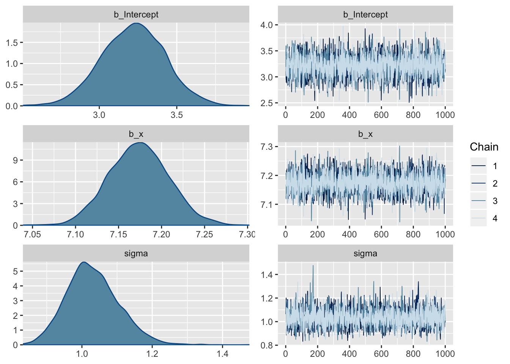

library(tidyverse)
library(brms)
N <- 100
x <- seq(0, 10, length.out = N)
e <- rnorm(N)
y <- 3.17 + 7.18 * x + e
inp_data <- tibble(x, y)
plot(inp_data, type = 'l')
priors <- prior(uniform(0, 10), class = Intersept) +
prior(uniform(3, 15), class = b)
lin_fit <- brm(y ~ x, data = inp_data, refresh = 0)
summary(lin_fit)## Family: gaussian
## Links: mu = identity; sigma = identity
## Formula: y ~ x
## Data: inp_data (Number of observations: 100)
## Samples: 4 chains, each with iter = 2000; warmup = 1000; thin = 1;
## total post-warmup samples = 4000
##
## Population-Level Effects:
## Estimate Est.Error l-95% CI u-95% CI Eff.Sample Rhat
## Intercept 3.22 0.20 2.82 3.62 3582 1.00
## x 7.17 0.03 7.11 7.24 3847 1.00
##
## Family Specific Parameters:
## Estimate Est.Error l-95% CI u-95% CI Eff.Sample Rhat
## sigma 1.03 0.07 0.90 1.19 3073 1.00
##
## Samples were drawn using sampling(NUTS). For each parameter, Eff.Sample
## is a crude measure of effective sample size, and Rhat is the potential
## scale reduction factor on split chains (at convergence, Rhat = 1).plot(lin_fit)